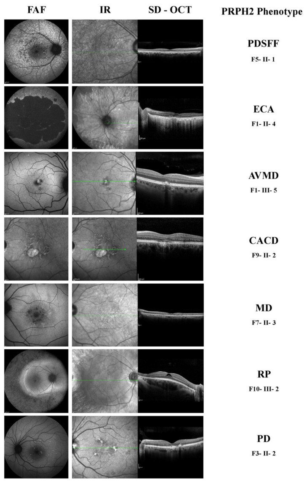
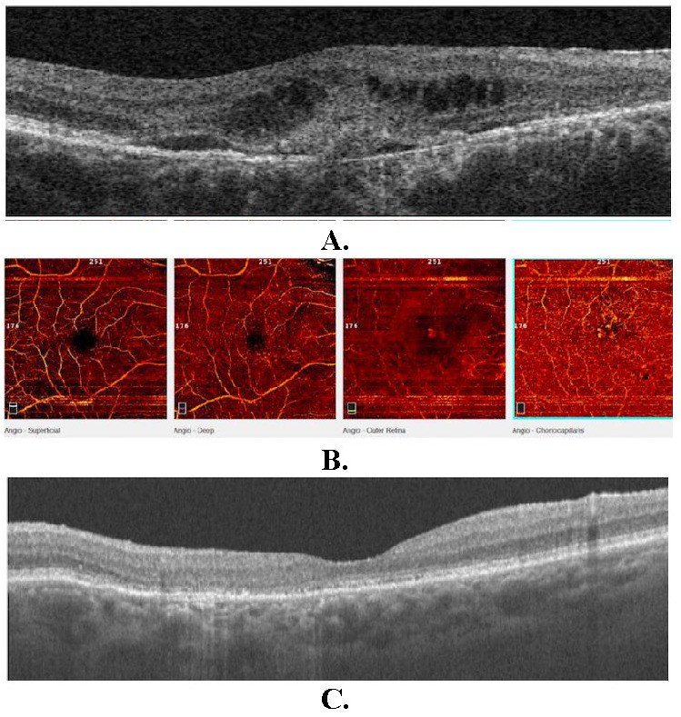
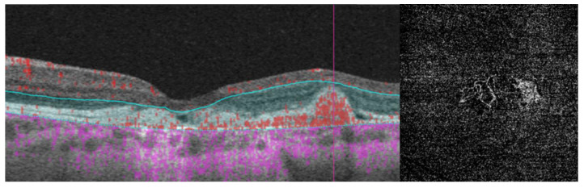

1407 — Tân mạch hắc mạc (CNV) trên nền loạn dưỡng hoa văn PRPH2: "dịch dưới võng mạc" là u mạch hay vật liệu lipofuscin? / Choroidal neovascularization in PRPH2 pattern dystrophy
Tags: pattern:tan-mach-hac-mac pattern:bong-thanh-dich pattern:faf-tang-huyuynh-quang pattern:ez-day vung:hoang-diem vung:hac-mac protocol:FAF-SD-OCT protocol:OCTA protocol:FA-ICGA protocol:anti-VEGF protocol:di-truyen-PRPH2
Mức chắc chắn (certainty): tổng hợp y văn (literature synthesis) — đọc trực tiếp toàn văn 5 bài mở qua Europe PMC/PMC (Diagnostics 2022; Diagnostics 2024; Genes 2025; Rom J Ophthalmol 2023; IOVS 2024) + 1 bài về dấu hiệu OCT (Int J Retina Vitreous 2025). 3 ca nguyên văn dùng cho Blind Quiz (ảnh CC BY 4.0).
1. Tổng quan — vì sao PRPH2 gây loạn dưỡng, vì sao loạn dưỡng lại sinh tân mạch
- Gen và protein: PRPH2 (peripherin-2, trước đây gọi rd2/ peripherin), nằm ở 6p21.1, mã hóa glycoprotein xuyên màng cần cho sự hình thành–ổn định–tái tạo đĩa đoạn ngoài tế bào quang thụ (photoreceptor outer segment discs) bằng cách "dính" vành đĩa (disc rim) với ROM1 (Rom J Ophthalmol 2023; Genes 2025). Đột biến tập trung ở vòng D2 (tới 82% các biến thể) (Genes 2025).
- Vì sao ứ lipofuscin: khi PRPH2 hỏng, đĩa đoạn ngoài bị lỗi cấu trúc → biểu mô sắc tố (RPE) thực bào không hiệu quả → lipofuscin tích tụ dưới võng mạc/ trong RPE → tăng huỳnh quang trên FAF (hyperautofluorescence). Đây là lý do FAF là phương thức nhạy nhất để nhận diện sớm loạn dưỡng hoa văn (Diagnostics 2022).
- Vì sao "hoa văn": lipofuscin phân bố theo hình mẫu (cánh bướm, hình trứng, hình mạng lưới, hạt "pulverulentus") → tên gọi pattern dystrophy (PD). Tổn thương thường đối xứng hai mắt nhưng không bắt buộc; cùng một đột biến có thể cho nhiều kiểu hình khác nhau trong cùng gia đình (Diagnostics 2022).
- Vì sao xuất hiện CNV — cơ chế mô học (không phải "biến chứng ngẫu nhiên"):
- RPE–Bruch bị tổn thương mạn tính bởi vật liệu lipofuscin/ drusen-like → mất hàng rào và viêm mạn (cytokine, complement).
- Thiếu máu hắc mạc ngoài do mất lớp mao mạch (choriocapillaris) → tăng VEGF.
- Kết quả: tân mạch từ hắc mạc xuyên qua Bruch → CNV type 1 (dưới RPE) hoặc type 2 (dưới võng mạc), gây dịch/ xuất huyết/ xơ hóa (Diagnostics 2024; IOVS 2024).
- Tần suất CNV trong bệnh PRPH2 (định lượng):
- 17% (5/29 bệnh nhân) có CNV một mắt, xuất hiện trên nhiều kiểu hình (PD, CACD, ECA) (Diagnostics 2022) — cao hơn nhiều so với con số "hiếm gặp" thường được dạy.
- 1/36 bệnh nhân trong đoàn hệ Oxford có CNV hai mắt, điều trị ranibizumab (Genes 2025).
- Trong đoàn hệ PRPH2 dài hạn (theo dõi trung bình 14 năm), 2 ca kiểu hình butterfly PD phát triển tân mạch hoàng điểm và cần nhiều mũi anti-VEGF (IOVS 2024).
- PRPH2 chiếm 3,5–10,3% các bệnh võng mạc di truyền tùy quốc gia (Pháp 10,3%, Mỹ 9%, Ý 9%, Nhật 5%, Bắc Mỹ 3,5%) (Diagnostics 2022); bệnh võng mạc di truyền nói chung 1/2.500–1/3.000 (Genes 2025).
- Vì sao CNV ở PRPH2 dễ bị bỏ sót: bệnh nhân đã có bất thường RPE/ EZ từ trước, nên dịch mỏng dưới võng mạc bị quy cho "loạn dưỡng tiến triển"; và PED "nằm thấp" (low-lying) không kèm exudate có thể che giấu CNV — chỉ OCTA mới thấy dòng chảy (IOVS 2024). Đây là cạm bẫy trung tâm của bài.
2. Mẫu hình + chẩn đoán phân biệt theo vị trí (gamut)
- Khuôn 1 — Vật liệu vàng dưới võng mạc (vitelliform) ở hoàng điểm, OCT có "vật liệu" nhưng KHÔNG dịch. Gamut: AVMD/ PD thể vitelliform vs bệnh Best vs drusen lớn/ drusenoid PED vs CNV type 1 không exudate. Chốt: FAF tăng huỳnh quang hình trứng, EZ còn, không dịch, không xuất huyết → vật liệu lipofuscin; OCTA có võng mạch dưới RPE → CNV ẩn.
- Khuôn 2 — Hình "cánh bướm" (butterfly) trung tâm. Gamut: butterfly-shaped PD vs loạn dưỡng do HCQ/ chloroquine vs dystrophy do ABCA6/ CTNNA1 vs AMD thể teo. Chốt: đối xứng, tăng huỳnh quang hình cánh bướm + tiền sử gia đình trội → PD; tiền sử thuốc, tổn thương ngoài hoàng điểm hình vòng → độc chất.
- Khuôn 3 — Dịch dưới võng mạc MỚI (subretinal fluid) ở mắt đã có loạn dưỡng. Gamut: CNV vs viêm hắc mạc (CSCR, VKH) vs bong thanh dịch do tăng áp lực vs dịch sau tiêm. Chốt: OCTA có mạng mạch + FFA rò thì muộn + xuất huyết/ lipid → CNV; OCTA không mạng mạch, FA không rò → không phải CNV.
- Khuôn 4 — Teo RPE/ hắc mạc lan rộng (ECA, CACD) không dịch. Gamut: CACD/ ECA do PRPH2 vs teo địa lý do AMD vs loạn dưỡng hắc mạc trung tâm. Chốt: FAF giảm huỳnh quang đối xứng, không drusen điển hình, tuổi khởi phát < 50** → PRPH2; **drusen + tuổi > 65 + tổn thương không đối xứng → AMD.
- Khuôn 5 — "Vết nứt hoàng điểm" (foveal crack sign) trên OCT. Gamut: biến đổi loạn dưỡng hoa văn vs lỗ hoàng điểm sắp hình thành vs CNV co kéo. Chốt: đường tăng phản xạ dọc xuyên lớp võng mạc ngoài sau bong dịch kính sau → dấu hiệu thoái hóa, không phải mạng mạch; theo dõi, không tiêm anti-VEGF (Int J Retina Vitreous 2025).
3. Bảng so sánh phân biệt (ma trận đối chiếu)
| Thực thể (entity) | Hình ảnh điển hình (FAF/ SD-OCT/ OCTA/ FA) | Chốt vào (rule-in) | Chốt loại (rule-out) | Gợi ý xác nhận |
|---|---|---|---|---|
| CNV trên PD (PRPH2) | FAF: vùng tăng huỳnh quang mờ + giảm huỳnh quang do xuất huyết; OCT: dịch dưới võng mạc/ nội bào, vật liệu tăng phản xạ dưới võng mạc, PED; OCTA: mạng mạch dưới RPE/ dưới võng mạc | Mạng mạch trên OCTA + dịch/ xuất huyết mới (hoặc PED "nằm thấp" không exudate nhưng có flow) | Không có mạng mạch + FFA không rò → không phải CNV | OCTA + FFA; theo dõi 4–6 tuần nếu nghi ngờ |
| Vật liệu vitelliform (AVMD/ PD) | FAF tăng huỳnh quang hình trứng/ tròn, OCT: vật liệu đồng nhất dưới võng mạc, không dịch, EZ còn | Tăng huỳnh quang + không dịch + không flow | Có flow trên OCTA hoặc FFA rò → CNV | OCT định kỳ, OCTA khi có triệu chứng mới |
| Butterfly PD (không CNV) | FAF hình cánh bướm đối xứng; OCT: bất thường RPE/ EZ, không dịch, độ dày võng mạc bảo tồn | Đối xứng + không dịch + FAF điển hình | Dịch/ xuất huyết một bên → tìm CNV | CFP + FAF + OCT; gen PRPH2 |
| Teo hắc mạc lan rộng (ECA/ CACD) | FAF giảm huỳnh quang rộng, OCT: mất RPE, EZ, ONL, không dịch | Teo đối xứng + không drusen + tiền sử gia đình | Drusen điển hình + không đối xứng + tuổi cao → AMD | Gen; so sánh hai mắt |
| AMD thể tân mạch (bệnh giả) | Drusen, CNV, dịch; không đối xứng, không có hình mẫu bướm/ trứng | Tuổi > 65 + drusen + CNV | Hình mẫu đối xứng + khởi phát < 50 + gia đình → PD | FAF (hình mẫu), gen, tiền sử |
| Foveal crack sign | OCT: đường tăng phản xạ dọc xuyên võng mạc ngoài, không dịch, không flow | Sau bong dịch kính sau + không mạng mạch | Có mạng mạch/ dịch tiến triển → CNV/ lỗ hoàng điểm | OCT theo dõi; không tiêm |
- Ảnh đối chiếu kiểu hình:
images/1407_cnv-loan-duong-hoa-van-prph2_FAF-OCT_diagnostics-f001.jpg(7 kiểu hình PRPH2).

4. Protocol chụp + hệ phân độ/ điểm chuẩn hóa + điều trị
4.1. Bộ ảnh tối thiểu (mỗi lần khám)
| Bước | Phương thức | Thông số/ ngưỡng | Vì sao |
|---|---|---|---|
| 1 | FAF 50° và 30° | So sánh hình mẫu hai mắt; tăng huỳnh quang = lipofuscin hoạt động, giảm = teo RPE | Nhạy nhất để nhận diện kiểu hình và theo dõi teo (Diagnostics 2022) |
| 2 | SD-OCT (máy Spectralis/ Cirrus) | Đo độ dày vùng hoàng điểm (CMT), tìm dịch dưới võng mạc/ nội bào, PED, vật liệu tăng phản xạ, EZ | Phát hiện hoạt tính CNV và biến chứng |
| 3 | OCTA (4 lớp: nông, sâu, võng mạc ngoài, choriocapillaris) | Tìm mạng mạch ở lớp võng mạc ngoài/ choriocapillaris; type 1 = giữa RPE và Bruch, type 2 = dưới võng mạc | Không cần thuốc cản quang, phát hiện CNV kể cả khi không có exudate |
| 4 | FFA ± ICGA | Rò thì muộn = hoạt tính; ICGA cho PCV/ mạng mạch hắc mạc | Xác nhận hoạt tính khi OCTA không rõ; dùng khi định PDT |
| 5 | Gen PRPH2 (NGS panel IRD) | Xác định biến thể + tư vấn di truyền trội | Kiểu hình đơn độc không đủ; ảnh hưởng tiên lượng và sinh sản |
4.2. Ngưỡng và cách gọi "CNV hoạt động"
- Hoạt động = có mạng mạch trên OCTA/ FFA VÀ ít nhất một dấu hiệu: dịch dưới võng mạc/ nội bào mới, xuất huyết, lipid, tăng CMT so lần trước, hoặc PED tăng kích thước.
- Không hoạt động = mạng mạch không đổi ≥ 3–6 tháng, không dịch, không xuất huyết → theo dõi, không tiêm.
- Bẫy "PED nằm thấp": PED thấp, không exudate vẫn có thể là CNV type 1 → nếu OCTA có flow, coi là CNV và theo dõi sát 4–6 tuần; không chờ đến khi có dịch (IOVS 2024).
4.3. Điều trị anti-VEGF (dữ liệu thực tế từ ca PRPH2)
| Phác đồ | Số liệu | Nguồn |
|---|---|---|
| 3 mũi hàng tháng ranibizumab 0,5 mg, sau đó theo dõi 4–6 tuần | CMT 323 → 247 µm, BCVA 6/12 → 6/6, hết dịch dưới võng mạc, không tái hoạt 12 tháng | Case Rep Ophthalmol 2012 (PMC3331880 — chỉ số liệu; giấy phép NC-ND nên không dùng ảnh) |
| 3 mũi ranibizumab cách 6 tuần | BCVA 0,6 → 0,7, hết dịch/ hết CNV trên OCT, ổn định 26 tháng | Rom J Ophthalmol 2023 (PMC10385706, CC BY) |
| Nhiều mũi anti-VEGF ở butterfly PD tiến triển | 2 ca trong đoàn hệ 14 năm; dịch tồn dư ở một ca | IOVS 2024 (PMC11668351 — chỉ số liệu) |
- Quy tắc thực hành: khởi đầu 3 mũi hàng tháng, đánh giá hoạt tính rồi treat-and-extend (gia hạn 2 tuần/lần khi khô, rút ngắn khi tái phát); mục tiêu là giữ EZ/ BCVA, không phải "làm sạch FAF" — vì teo RPE vẫn tiến triển dù kiểm soát CNV.
- Không tiêm khi: không có mạng mạch, chỉ có vật liệu vitelliform, hoặc foveal crack sign đơn thuần.
flowchart TD
A["Bệnh nhân PRPH2 / nghi loạn dưỡng hoa văn, nhìn mờ hoặc biến dạng"] --> B["FAF 50-30 + SD-OCT + OCTA 4 lớp"]
B --> C{"Có dịch dưới võng mạc, xuất huyết hoặc PED mới?"}
C -->|"Không"| D{"OCTA có mạng mạch dưới RPE?"}
D -->|"Không"| E["Theo dõi 6-12 tháng: FAF + OCT; tư vấn di truyền"]
D -->|"Có"| F["CNV type 1 không hoạt động: theo dõi 4-6 tuần, không tiêm"]
C -->|"Có"| G["FFA xác nhận rò thì muộn"]
G --> H["Chẩn đoán CNV hoạt động"]
H --> I["Anti-VEGF: 3 mũi hàng tháng (ranibizumab/aflibercept)"]
I --> J["Đánh giá 4-6 tuần: OCT + OCTA"]
J --> K{"Khô và BCVA ổn định?"}
K -->|"Có"| L["Treat-and-extend: gia hạn 2 tuần mỗi lần"]
K -->|"Không"| M["Rút ngắn khoảng cách hoặc đổi thuốc; xem xét PDT nếu PCV"]
L --> N{"Tái phát dịch?"}
N -->|"Có"| I
N -->|"Không"| E
5. Biến thể bình thường và cạm bẫy
- Biến thể bình thường/ lành tính:
- Drusen nhỏ hai bên hoàng điểm ở người trẻ với FAF tăng nhẹ — nếu đối xứng + hình mẫu và không có tiền sử gia đình rõ, vẫn có thể là PDSFF; theo dõi chứ không điều trị.
- PED lành tính không dịch ở đáy loạn dưỡng không phải CNV — OCTA là chốt.
- Tăng huỳnh quang FAF quanh hoàng điểm có thể do lipofuscin lan rộng, không đồng nghĩa hoạt động.
- Cạm bẫy (pitfall) hay gặp nhất:
- Gọi "AMD" và bỏ qua bệnh di truyền: bệnh nhân 50–60 tuổi với CNV + teo hai mắt đối xứng, không drusen điển hình, hình mẫu bướm → PRPH2. Chẩn đoán sai dẫn tới không tư vấn di truyền và không theo dõi mắt còn lại/ con cái (Diagnostics 2022).
- Điều trị "dịch" mà không chứng minh mạng mạch: vật liệu vitelliform có thể trông như dịch; tiêm anti-VEGF lặp lại vô ích và tăng nguy cơ teo — luôn có OCTA/ FFA trước khi tiêm.
- Bỏ qua CNV "không exudate": PED nằm thấp, không dịch, nhưng OCTA có flow → vẫn là CNV; nếu không theo dõi, bệnh nhân đến muộn với xơ hóa dưới võng mạc (IOVS 2024).
- Nhầm foveal crack sign với CNV: đường tăng phản xạ dọc không có flow, thường sau bong dịch kính sau; không tiêm (Int J Retina Vitreous 2025 — 8/56 mắt có dấu hiệu, chỉ 1 tiến triển lỗ hoàng điểm, p = 0,1429 so với nhóm không có dấu hiệu).
- Đánh giá "đáp ứng" chỉ bằng BCVA: BCVA có thể giữ nguyên trong khi CMT tăng hoặc EZ mỏng dần; theo dõi OCT định lượng (CMT, EZ) mới phát hiện tái phát.
- Quên mắt thứ hai: CNV có thể một mắt (17% trong đoàn hệ Ý) — khám và chụp cả hai mắt mỗi lần, vì mắt còn lại có nguy cơ tương tự.
- Tư vấn tiên lượng sai: PRPH2 là bệnh tiến triển chậm nhưng không ngừng; kiểm soát CNV không ngăn được teo — cần nói rõ để tránh thất vọng điều trị.
- Phản biện trung thực nguồn: tần suất CNV 17% đến từ một đoàn hệ nhỏ (29 bệnh nhân, Ý) và 1/36 từ đoàn hệ Oxford — khoảng tin cậy rộng, nên chỉ nên nói "khoảng 3–17% tùy đoàn hệ", không dùng con số đơn lẻ để tư vấn nguy cơ cá nhân. Tương tự, hiệu quả anti-VEGF ở PRPH2 chỉ có ca báo/ loạt nhỏ, không có RCT — không suy rộng ra "mọi CNV do loạn dưỡng đều đáp ứng tốt".
6. Tự lượng giá — Blind Quiz ngay trên trang tĩnh
Ca 1 — Nam 50 tuổi, nhìn mờ nhẹ hai mắt, không biến dạng

- Gợi ý lâm sàng: 50 tuổi, BCVA 20/25, không biến dạng, không tiền sử thuốc; hai mắt có tổn thương tương tự.
- Câu hỏi: (a) Mô tả hình mẫu trên FAF? (b) OCT có dịch không? (c) Có chỉ định anti-VEGF ngay không, vì sao?
Bấm để hiện đáp án (findings + chẩn đoán)
- Dấu hiệu: FAF có vùng tăng huỳnh quang hình cánh bướm ở hoàng điểm; OCT: bất thường RPE và EZ, KHÔNG có dịch dưới võng mạc, độ dày võng mạc bảo tồn.
- Chẩn đoán: butterfly-shaped pattern dystrophy (PRPH2) — lipofuscin tích tụ theo hình mẫu, chưa có tân mạch.
- Trả lời: không tiêm anti-VEGF; cần OCTA + FFA để loại CNV ẩn, rồi theo dõi 6–12 tháng (FAF + OCT), tư vấn di truyền trội và khám mắt còn lại.
- Nguồn ảnh: Diagnostics 2024;14:878, Figure 7 — PMC11083341, CC BY 4.0 (Gómez-Benlloch A et al.).
Ca 2 — Nam 66 tuổi, nhìn mờ + biến dạng mắt phải 8 tháng

- Gợi ý lâm sàng: 66 tuổi, BCVA 0,6 mắt phải/ 1,0 mắt trái, 8 tháng nhìn mờ và biến dạng; không có tiền sử gia đình; đang dùng latanoprost.
- Câu hỏi: (a) Mô tả 3 dấu hiệu trên OCT? (b) OCTA cho thấy gì và ở lớp nào? (c) Chẩn đoán + phác đồ?
Bấm để hiện đáp án (findings + chẩn đoán)
- Dấu hiệu: (A) gián đoạn RPE, vật liệu tăng phản xạ dưới võng mạc, dịch dưới võng mạc, nang nội bào, tăng độ dày võng mạc; (B) OCTA 4 lớp cho mạng mạch ở lớp võng mạc ngoài và choriocapillaris; (C) sau điều trị: hết dịch, độ dày giảm.
- Chẩn đoán: butterfly-shaped PD hai mắt + CNV hoạt động mắt phải — lipofuscin hình mẫu hai bên + tân mạch type 1/2 một bên; FFA rò thì muộn xác nhận.
- Phác đồ: ranibizumab 0,5 mg × 3 mũi cách 6 tuần → BCVA 0,7, hết dịch, ổn định 26 tháng; theo dõi OCT/ OCTA mỗi 4–6 tuần giai đoạn đầu.
- Nguồn ảnh: Rom J Ophthalmol 2023;67:185–190, Figure 2 — PMC10385706, CC BY (Świerczyńska M et al.).
Ca 3 — Nữ 22 tuổi, nhìn mờ một mắt, tiền sử "loạn dưỡng hoàng điểm"

- Gợi ý lâm sàng: 22 tuổi, BCVA 20/100, tiền sử loạn dưỡng hoàng điểm dạng vitelliform, mới xuất hiện biến dạng.
- Câu hỏi: (a) OCTA cho thấy gì? (b) Vì sao OCT thường có thể bỏ sót? (c) Điều trị và theo dõi?
Bấm để hiện đáp án (findings + chẩn đoán)
- Dấu hiệu: angio B-scan cho thấy mạng mạch type 1 nằm giữa RPE và màng Bruch; ảnh en face lớp võng mạc ngoài thấy các mạch thật — tức tân mạch dưới RPE.
- Vì sao dễ sót: CNV type 1 nằm dưới RPE, có thể chỉ là PED "nằm thấp" không exudate; trên OCT thường chỉ thấy RPE dày lên nhẹ — không có dịch nên dễ bỏ qua. OCTA phát hiện dòng chảy.
- Điều trị: anti-VEGF (3 mũi hàng tháng rồi treat-and-extend), theo dõi OCT + OCTA 4–6 tuần; nếu không có flow/ dịch → theo dõi, không tiêm.
- Lưu ý nguồn: ca gốc là bệnh Best (bestrophin) — dùng để minh họa hình thái OCTA của MNV type 1, không đại diện PRPH2; cơ chế và cách đọc lớp giống nhau.
- Nguồn ảnh: Diagnostics 2024;14:878, Figure 6 — PMC11083341, CC BY 4.0 (Gómez-Benlloch A et al.).
Bài liên quan chéo
- 489 – Loạn dưỡng hoa văn & teo võng mạc ngoài di truyền
- 482 – Tân mạch hắc mạc sau CSCR mạn (PNV)
- 444 – Tắc mạch võng mạc
- 447 – Đốm trắng võng mạc
- 443 – Võng mạc đái tháo đường
- 441 – OCT hoàng điểm
- 400 – Tổng quan Mắt & thị giác
Ảnh
images/1407_cnv-loan-duong-hoa-van-prph2_FAF-OCT_diagnostics-f001.jpg— 7 kiểu hình PRPH2 (FAF/ IR/ OCT).images/1407_cnv-loan-duong-hoa-van-prph2_FAF-OCT_diagnostics-f007.jpg— butterfly PD: màu, FAF, OCT không dịch.images/1407_cnv-loan-duong-hoa-van-prph2_OCT-OCTA_rjo-f002.jpg— CNV trên butterfly PD: OCT trước/ sau, OCTA 4 lớp.images/1407_cnv-loan-duong-hoa-van-prph2_OCTA_diagnostics-f006.jpg— MNV type 1 trên OCTA (minh họa hình thái).- Nguồn + giấy phép từng ảnh:
images/CREDITS.md; link gốc:sources.md.
Không dùng để chẩn đoán độc lập khi chưa có người hướng dẫn.